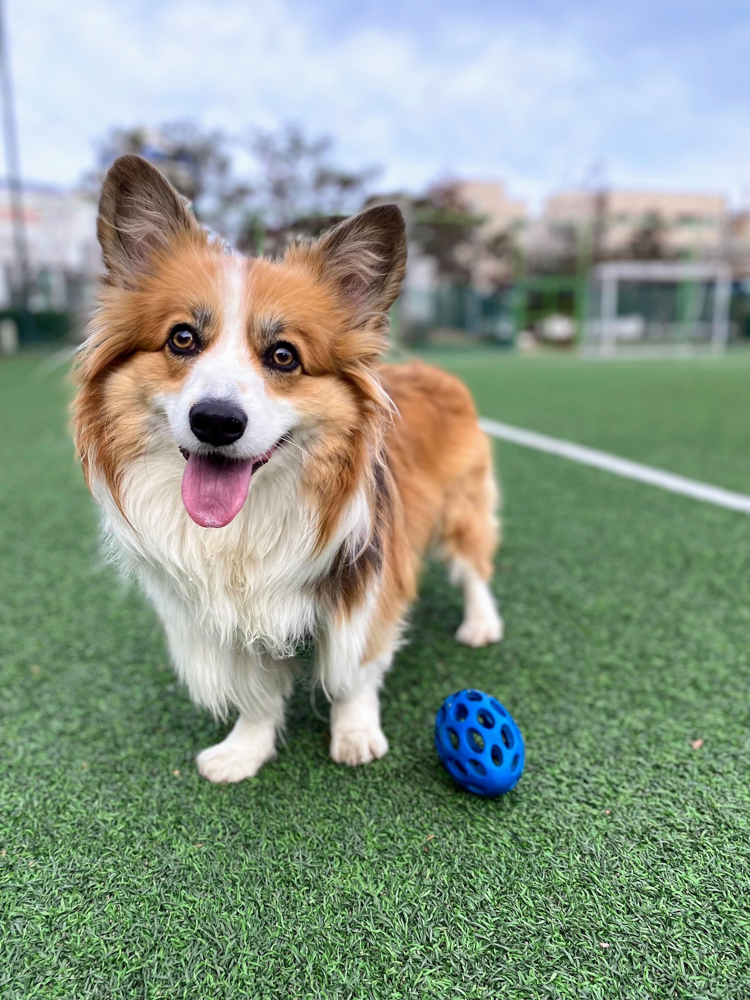

Everyday Life with Bandi

Bandi came into our home in September 2020, when the pandemic was still at its height.
Looking back, before we brought Bandi home, he must have mostly seen me wearing a mask. He probably had no way of knowing what my face really looked like, or what kind of person he was about to live with.
Before we named him Bandi, there were several other names we considered. I did not want something too common. I wanted a name that would somehow spark a good thought each time I called it. Eventually, I came to the idea of a firefly — something that gives off a small flash of light whenever you see it. That is how he became Bandi.
When I first saw him, when he was about three months old, I honestly could not tell whether he was really a Welsh Corgi. Even as I was holding him in my arms, I felt a little uncertain. If he turned out not to be a Welsh Corgi after all, what was I supposed to do?
There were a few reasons I had wanted to raise a Welsh Corgi. I liked that they were known to be friendly and affectionate. I also liked hearing that they were smart and quick to learn. The fact that they had been loved by the British royal family also made the breed feel strangely appealing. But after I started living with Bandi, those reasons quickly became less important. At some point, Bandi was no longer lovable because he was a Welsh Corgi. He was lovable simply because he was Bandi.
Bandi is also my alarm clock. People I meet sometimes ask whether it is difficult to raise a dog of his size in an apartment. The answer is yes, it is. But when I think about what Bandi gives me in return, the effort I have to make feels much smaller.
Every morning, when I hear Bandi’s particular little whining sound, I have to get up, feed him, and begin the day. Sometimes, even when he is quiet, I wake up naturally before him. For a while after we first got Bandi, I was very diligent about taking him on morning walks. These days, I have passed much of that role on to my wife.
The first place I lived with Bandi was not Seoul, but Bucheon in Gyeonggi Province. More precisely, it was somewhere near the border between Seoul and Bucheon. There was a lot of greenery there, and whenever I invited people over, they would often say, “I didn’t know there was a place like this near Seoul.”
I lived there for more than seven years, and spent five of those years with Bandi. Although it was an apartment, waking up there often felt like waking up at a campsite or somewhere in the countryside. The air carried the scent of the forest from the hill behind us, and because there were not many tall buildings, the sky felt open. It was a wonderful place to live with Bandi.
Now Bandi and I live near the Han River in Seoul. Whenever I have time, I can take him out to the grass by the river, but it is hard to let him run freely. I do not get to see him sprint around as much as I used to, but at least I can give him soft ground to walk on and a chance to meet many different friends.
Bandi is now entering middle age in human years. In a way, he and I are going through a similar season of life. That means I need to pay more attention to his health. Recently, he gained quite a bit of weight, so we cut his meals by about half. Thankfully, he has slowly started to lose some weight.
Last night, my wife and I ordered delivery food for the first time in a while and sat on the sofa to eat. Bandi came over and settled near my feet. Then he looked up at me with that particular gaze of his. In the end, I had no choice but to give him nearly three times more treats than usual.
Bandi is very good at expressing himself without barking. Sometimes I think that a strong silence can also be a very effective communication strategy.
When I was young, having a dog was not allowed in my home. So living with a dog someday became one of the small items on my bucket list. Now, it has become an ordinary fragment of everyday life.
And perhaps that is exactly what makes it so precious.